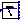
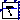

Package of plant models
This package provides models of devices to be used as system plants in a control design.
Extends from Modelica.Icons.Package (Icon for standard packages).
| Name | Description |
|---|---|
|  DoublePendulum | Multibody model of crane trolley |
|  DoublePendulumInverse | Multibody model of inverse crane trolley |
| Simple linear test system with zeros and poles | |
| Simple MIMO test system with two inputs, two outputs, zeros and poles |
Multibody model of crane trolley
Multibody model of a simple double pendulum system. This physical model is used in various models and functions of the library e.g. for linearization or as a base for linear controller design.
| Name | Description |
|---|---|
| m_trolley | Mass of trolley [kg] |
| m_load | Mass of load on 2nd arm [kg] |
| length | Total length of double pendulum (i.e. length of each arm = length/2) [m] |
| s_start | Initial position of trolley relative to world [m] |
| v_start | Initial velocity of trolley relative to world [m/s] |
| phi1_start | Initial rotation angle of 1st arm relative to trolley [rad] |
| phi2_start | Initial rotation angle of 2nd arm relative to 1st arm [rad] |
| w1_start | Initial angular velocity of 1st arm relative to trolley [rad/s] |
| w2_start | Initial angular velocity of 2nd arm relative to 1st arm [rad/s] |
| d | Damping constant for revolute joint of 1st arm [N.m.s/rad] |
| Name | Description |
|---|---|
| u | |
| s | |
| v | |
| phi | |
| w | |
| phi1 | |
| w1 |
 Modelica_LinearSystems2.Utilities.Plants.DoublePendulumInverse
Modelica_LinearSystems2.Utilities.Plants.DoublePendulumInverseMultibody model of inverse crane trolley
Multibody model of a simple inverted double pendulum system. This physical model is used in various models and functions of the library e.g. for linearization or as a base for linear controller design. The mdel is the same as in Modelica_Controller.Examples.Components.DoublePendulum but with different initial values because the initial values are used as a working point for linearization.
Extends from DoublePendulum (Multibody model of crane trolley).
| Name | Description |
|---|---|
| m_trolley | Mass of trolley [kg] |
| m_load | Mass of load on 2nd arm [kg] |
| length | Total length of double pendulum (i.e. length of each arm = length/2) [m] |
| s_start | Initial position of trolley relative to world [m] |
| v_start | Initial velocity of trolley relative to world [m/s] |
| phi1_start | Initial rotation angle of 1st arm relative to trolley [rad] |
| phi2_start | Initial rotation angle of 2nd arm relative to 1st arm [rad] |
| w1_start | Initial angular velocity of 1st arm relative to trolley [rad/s] |
| w2_start | Initial angular velocity of 2nd arm relative to 1st arm [rad/s] |
| d | Damping constant for revolute joint of 1st arm [N.m.s/rad] |
| cartDisturbance | True, if cart disturbance should be enabled |
| bodyDisturbance | True, if body disturbance should be enabled |
| Name | Description |
|---|---|
| u | |
| s | |
| v | |
| phi | |
| w | |
| phi1 | |
| w1 | |
| dist | |
| dist2 |
 Modelica_LinearSystems2.Utilities.Plants.SimpleLinearSystem
Modelica_LinearSystems2.Utilities.Plants.SimpleLinearSystemSimple linear test system with zeros and poles
Extends from Modelica.Blocks.Interfaces.SISO (Single Input Single Output continuous control block).
| Name | Description |
|---|---|
| u | Connector of Real input signal |
| y | Connector of Real output signal |
Modelica_LinearSystems2.Utilities.Plants.SimpleMIMOSystemSimple MIMO test system with two inputs, two outputs, zeros and poles
Extends from Modelica.Blocks.Interfaces.MIMO (Multiple Input Multiple Output continuous control block).
| Name | Description |
|---|---|
| nin | Number of inputs |
| nout | Number of outputs |
| Name | Description |
|---|---|
| u[nin] | Connector of Real input signals |
| y[nout] | Connector of Real output signals |